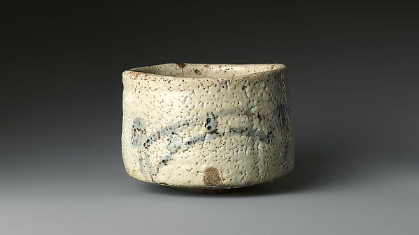
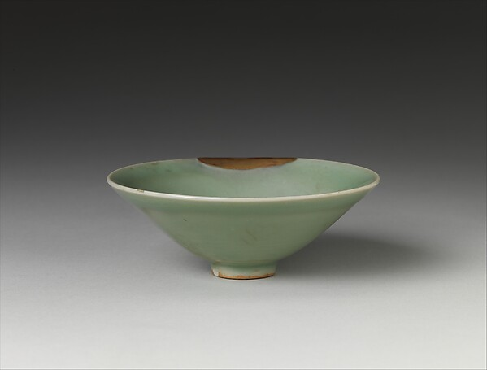

参
茶道 · 一碗見乾坤
千利休的「和敬清寂」，古田织部的「破格之美」——以及你喜欢的古田烧
🍵
千利休 · 茶道之圣
1522—1591。堺市富商出身，将茶道升华为「和敬清寂」的哲学。他是信长与秀吉两代霸主的茶头，最终却被秀吉赐死——一生如茶，苦后回甘，又带点说不清的涩。
🎎
古田织部 · 破格之美
1544—1615。利休七哲之首，既是身经百战的大名，又是茶道宗师。他打破利休的简素，追求「破格」的动态之美，茶器开始大胆变形——「织部烧」便因他而得名。
🏺
织部烧 · 古田烧
美浓（今岐阜县）烧制的桃山时代名陶。招牌特色：神秘的「织部绿」釉、几何铁绘纹样、故意歪曲的造型——「歪」本身就是美。茶碗界的叛逆少年。
茶碗图鉴 · 点击放大
志野烧

志野烧 · 白与火
桃山时代名碗，白釉间浮着窑火的痕迹。
茶碗
茶道之碗
一碗一世界，茶碗的温润手感是茶席的灵魂。
茶碗

釉色温润
每一只茶碗的釉色与窑变，都独一无二。
一套茶席的家当
茶碗乐烧 · 织部 · 志野
茶入浓茶的小罐
水指盛清水
建水废水盂
茶杓取茶之勺
茶筅点茶竹刷
风炉煮水之炉
碗
「一期一会——每一次茶会，都是此生仅有的一次。」
今日之碗 · 点击换一只